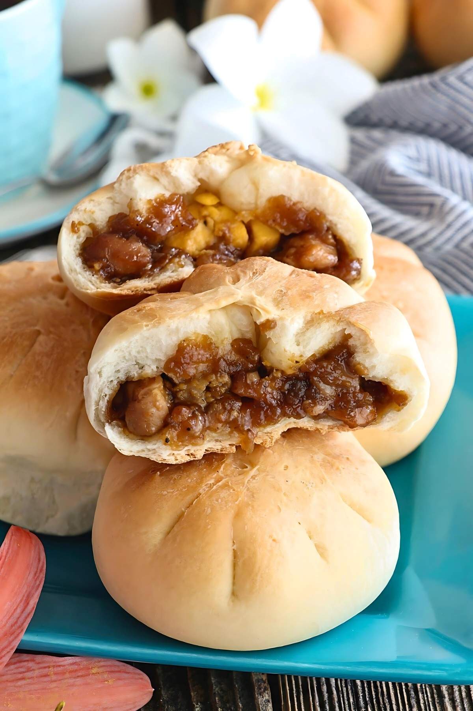

Siopao
Siopao (Tagalog pronunciation: [ˈʃopaʊ]), a Philippine steamed bun with various fillings. It is the indigenized version of the Fujianese baozi, introduced to the Philippines by Hokkien immigrants during the Spanish colonial period.



Known in the Bicol region since the 1970s, Toasted Siopao is made from hard dough, filled with pork, onions, and a slice of boiled egg.